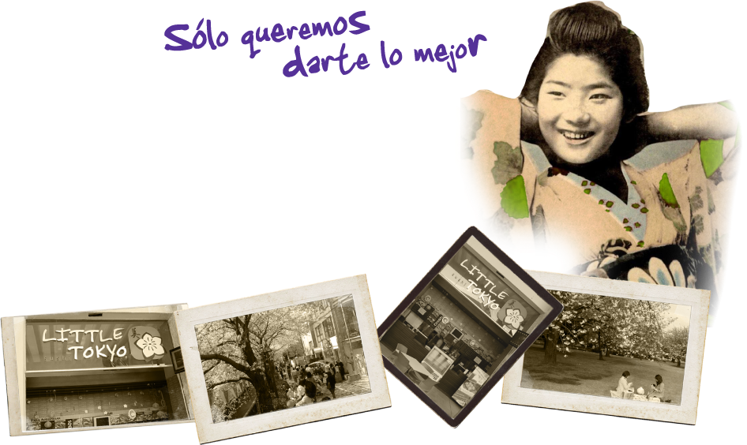


<div id="nosotrospar">
	<p>
	<strong>Little Tokyo</strong> nace en la ciudad de los Cabos BCS, el 14 de agosto <br />
	del 2004.  Se ocupa  en resaltar el sabor y la belleza de la comida<br />
	 y cultura japonesa, presenta sus formas y origen, fusionando <br />
	en sabores que se relacionan con nuestras costumbres y gustos.<br />
	</p>
	<p>
	Ofrecer la mejor comida y  el mejor servicio no es suficiente, <br />
	constantemente busca crear diferentes combinacionesy platillos <br />
	para el deleite de todos sus clientes aunado a una imagen y <br />
	un ambiente basado en una experiencia innovadora.<br />
	</p>
	<p>
	<strong>Little Tokyo</strong> es una opción saludable,  ya que te envuelve <br />
	en el gusto por los buenos momentos mismos que <br />
	pasaras disfrutando de su ambiente y su cocina.<br />
	</p>
</div>